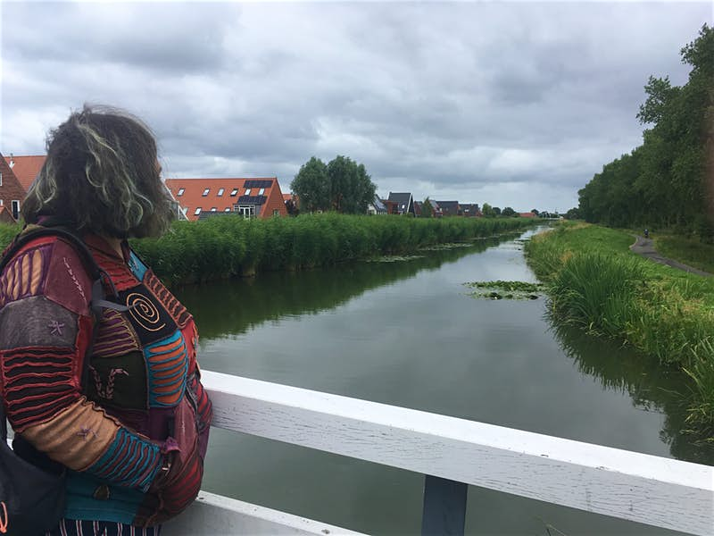

Nel 2018 è stata lanciata l'iniziativa DiscoverEU, che offre viaggi in treno gratuiti in tutta l'UE ai giovani di 18 anni. Questo progetto, sostenuto dalla Commissione Europea , ha dato biglietti Interrail gratuiti a quasi 50.000 candidati ammissibili. L'obiettivo è promuovere la libera circolazione all'interno dell'UE, investire nei giovani e consentire loro di esplorare la diversa storia e cultura che li rende europei. La prossima tornata avrà luogo da giovedì 7 novembre 2019 e durerà fino al 28 novembre 2019.
Abbiamo parlato con Neža, studentessa di 19 anni di Lubiana, con la sindrome di Asperger. Quando le è stata diagnosticata, i medici non si aspettavano che potesse diventare indipendente, ma, armata del suo pass gratuito DiscoverEU Interrail, nel luglio 2019 ha iniziato a viaggiare in Europa da sola.

Perchè hai deciso di richiedere il DiscoverEU?
Quando mi è stata diagnosticata la sindrome di Asperger, i medici hanno detto ai miei genitori che non sarei mai stata indipendente. Ma non mi sentivo diversa da nessun altro. Ero cresciuta ascoltando le storie di mia zia sui luoghi che aveva visitato in tutto il mondo ed ero rimasta affascinata sicura che sarebbe stata un esperienza indimenticabile. Quando parlavo dei miei piani ai miei genitori mi guardavano e sorridevano ma sapevo che vedevano la mia sindrome come un problema, un qualcosa che non mi avrebbe permesso di partire da sola.
Un giorno stavo su Instagram ho visto apparire la pubblicità di DiscoverEU. Senza pensarci troppo, ho compilato la domanda e me ne sono immediatamente dimenticata. Circa un mese dopo, mentre stavo aspettando l'autobus ho scoperto che mi era stato assegnato un pass, ho urlato per l'eccitazione e tutti quanti alla fermata hanno pensato che fossi pazza!
Quale route hai scelto?
Sono partita da Lubiana a luglio, poi ho continuato a Monaco in Germania. Ho fatto un tour nei Paesi Bassi, sono andata a Berlino, Praga, Cracovia e poi sono tornata a casa. Ho viaggiato per 20 giorni da sola.
Con la sindrome di Asperger, che sfide hai dovuto affrontare in viaggio
Non sono mai stato brava con l'organizzazione o parlare con degli estranei. Questo viaggio mi ha costretto a fare entrambe le cose. Tutte le persone che ho incontrato sono state fantastiche. C'era una ragazza australiana che ho incontrato a Monaco e una ragazza degli Stati Uniti con cui ho fatto amicizia in un ostello ad Amsterdam. Una famiglia slovena mi ha ospitato per tre notti a Delft, che è stata una delle mie destinazioni preferite. Non dimenticherò mai queste persone.
Cosa hai imparato da questo viaggio?
Ho imparato che, indipendentemente da quello che possano pensare gli altri, devi fare esperienze per te stessa. Ne guadagnerai così tanto e vedrai che le persone in tutto il mondo sono disposte ad aiutarti. Il primo giorno non avevo idea di cosa aspettarmi e l'ultimo giorno piangevo sul treno perché il viaggio stava finendo.
Sopratutto, ho acquisito maggiore sicurezza in me stessa, migliori capacità comunicative ed ho dimostrato a me stessa di essere in grado di viaggiare autonomamente. Sono così grata per l'opportunità, per tutto ciò che ho visto e per tutte le persone che ho incontrato.
Che cosa ti senti di dire a chi vuole intraprendere un viaggio con il programma DiscoverEU
Parti! Potresti avere una delle migliori esperienze della tua vita, incontrare persone fantastiche e vivere un'avventura indimenticabile. Non pensare troppo a ciò che può andare storto, segui semplicemente il flusso e risolvi i problemi se si verificano. E non essere troppo triste se non ricevi il biglietto. Durante i miei viaggi ho incontrato una ragazza che era stata messa in lista d'attesa e alla fine ha ricevuto il pass. E' stato sicuramente un viaggio divertente e sicuro!